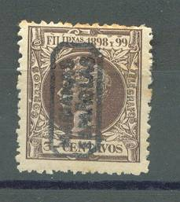

Note: on my website many of the
pictures can not be seen! They are of course present in the
catalogue;
contact me if you want to purchase it.


2 c green 3 c brown 5 c red 6 c blue 8 c brown 15 c olive
Value of the stamps |
|||
vc = very common c = common * = not so common ** = uncommon |
*** = very uncommon R = rare RR = very rare RRR = extremely rare |
||
| Value | Unused | Used | Remarks |
| All values | RRR | RRR | |
Sofar I have only seen forged overprints. If anybody posesses a picture of a genuine overprint, please contact me!
Forged overprints on wrong stamps exist (this is the 1890 issue!):
(Forged overprint!)
Spanish Philippines stamp with a Saipan cancel (19 April 1901). The following information is obtained from Dirk Spennemann (visit his excellent website on http://marshall.csu.edu.au/html/Stamps/Stamps.html). The item is a philatelic creation made in Saipan, using a genuine cancel. Friedemann depicts such an example with the same date as well as the same stamp. [Friedemann, Albert (1921) Die Postwertzeichen und Entwertungen der Deutschen Postanstalten in den Schutzgebieten und im Auslande.
Stamps - Briefmarken - Timbres-Poste - Postzegels - Francobolli - Estampillas